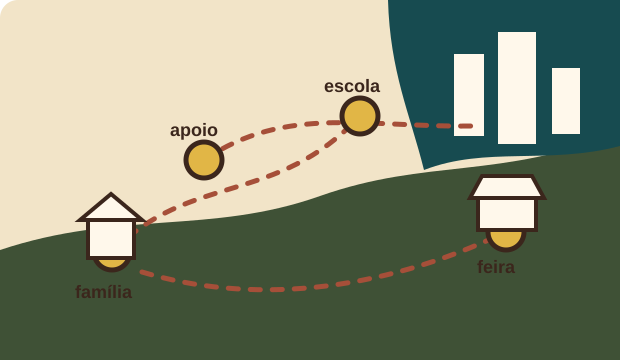

Serve para: investir em estrutura, sementes, irrigação e equipamentos.
Resolve: falta de capital inicial.
Exemplo: crédito orientado para comprar irrigação sem comprometer toda a renda.
Jornada interativa de apoio público
Por trás de cada feira, merenda escolar e alimento na mesa, existe uma rede de famílias produtoras que precisa de apoio para continuar produzindo com dignidade.

Quem produz?
A agricultura familiar não é apenas um modelo de produção. É uma forma de vida, trabalho e permanência no campo. Nela, a família participa diretamente das decisões, do cultivo, da venda e da gestão da propriedade.
Quando o apoio público funciona, essa família deixa de enfrentar tudo sozinha e passa a ter caminhos para produzir melhor, vender com justiça e permanecer no território.
Onde o sistema falha?
Sem capital, melhorias urgentes ficam paradas.
Decisões sobre solo, cultivo e gestão viram tentativa e erro.
O alimento perde qualidade antes de chegar ao comprador.
Parte do valor fica no caminho, longe de quem produziu.
Informação, previsão e controle chegam tarde ou nem chegam.
Seca, chuva e calor extremo tornam a renda instável.
A cidade consome, mas nem sempre reconhece a origem.
Produzir bem não garante acesso a mercado justo.
Função principal
Monte um caso real e veja quais políticas podem abrir caminho para a família produtora.
Selecione dificuldade, produção e objetivo para revelar uma trilha de apoio.
Biblioteca de instrumentos
Serve para: investir em estrutura, sementes, irrigação e equipamentos.
Resolve: falta de capital inicial.
Exemplo: crédito orientado para comprar irrigação sem comprometer toda a renda.
Serve para: orientar produção, solo, gestão e sustentabilidade.
Resolve: decisões feitas sem informação técnica.
Exemplo: técnico ajuda a reduzir pragas e melhorar produtividade.
Serve para: conectar produtores a escolas e instituições.
Resolve: dificuldade de venda e instabilidade de mercado.
Exemplo: alimentos locais entram na merenda escolar.
Serve para: vender, comprar e negociar em grupo.
Resolve: isolamento e pouca força comercial.
Exemplo: produtores organizam entrega coletiva para feira.
Serve para: desenvolver gestão, inovação e planejamento.
Resolve: dificuldade de administrar custos e ampliar qualidade.
Exemplo: curso de boas práticas para agroindústria familiar.
Serve para: usar dados, aplicativos, previsão climática e venda digital.
Resolve: isolamento informacional.
Exemplo: controle de estoque e divulgação de produtos pelo celular.
Serve para: conservar solo, água, sementes e biodiversidade.
Resolve: desgaste ambiental e dependência de insumos caros.
Exemplo: compostagem e rotação de culturas reduzem perdas.
Efeito dominó
Campo, escola e cidade
A cidade muitas vezes consome sem enxergar quem produz. Aproximar escola, campo e comunidade ajuda a valorizar o trabalho rural, reduzir desperdícios e entender que políticas públicas também são ferramentas de justiça social.
Simulação curta
Manifesto final
Quando uma política pública chega ao agricultor familiar, ela não beneficia apenas uma propriedade. Ela fortalece a feira, a escola, a alimentação, a cultura local, a economia regional e a permanência das famílias no campo.
Voltar ao painel